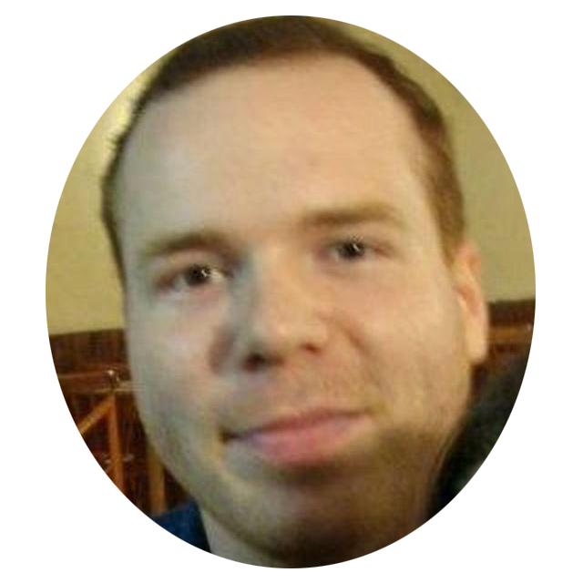

|  | Rodrigo Castro Martins LuzAnalista de Suporte Pleno & Desenvolvedor Front-End Trabalho na área de informática desde 2009 atuando com suporte e infraestrutura. Atualmente estudando Desenvolvimento Web e Banco de Dados, buscando oportunidades em Infraestrutura/Análise e Desenvolvimento de Sistemas. |
Curso de 44 horas de desenvolvimento Fullstack e cerca de 15 projetos utilizando: - Front-End Web Development: HTML 5, CSS 3, Bootstrap 4, Javascript ES6, DOM Manipulation, jQuery, Bash Command Line, Git, GitHub and Version Control, - Backend Web Development: Node.js, NPM, Express.js, EJS, REST, APIs, Databases, SQL, MongoDB, Mongoose, Deployment with GitHub Pages, Heroku and MongoDB Atlas
Curso de 54 horas com 5 projetos de páginas de design responsivo e funcional.
Curso de 35 horas sobre MySQL, SQL Server, T-SQL e Oracle
| HTML5/CSS3 | 💎💎💎💎💎 |
| Javascript | 💎💎💎💎💎 |
| MySQL/SQL Server | 💎💎💎💎💎 |
| Oracle PL/SQL | 💎💎💎💎💎 |
| Período | Empresa |
|---|---|
| 07/2017-02/2019 | Analista de Suporte Pleno - Stefanini IT |
| 06/2014-07/2017 | Técnico de Redes - NEXA Tecnologia |
| 11/2012-11/2013 | Técnico de Suporte Jr - Grupo Guaiba |
| 02/2011-05/2012 | Assistente de Suporte - Uniodonto Porto Alegre |
| 06/2010-01/2011 | Service Desk - Matone Promotora |
| 12/2007-08/2009 | Assistente de Suporte Técnico UTS III - Unisys Informática |